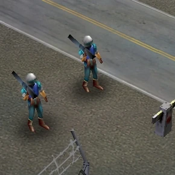
Ranger
Infantería básica estadounidense.
La facción estadounidense se caracteriza por su tecnología avanzada, aviación y unidades especializadas.

Infantería básica estadounidense.
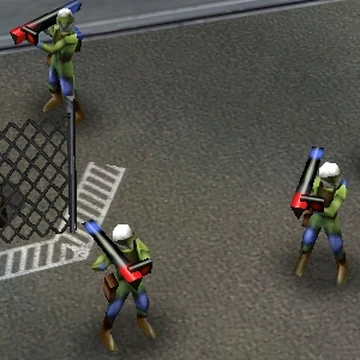
Unidad especializada contra vehículos y aeronaves con misiles guiados
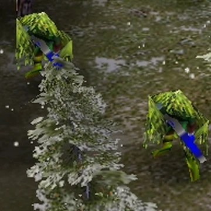
Unidad de reconocimiento especializada. Es invisible mientras no se este moviendo
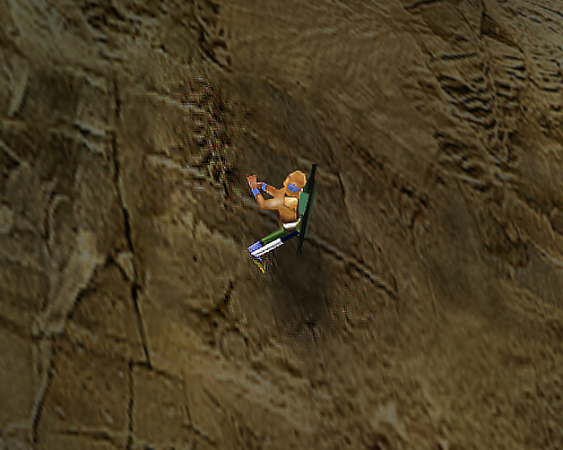
Héroe especializado en infiltración.Tiene 3 habilidades, las primeras 2 son dejar cargas explosivas, la primera es de un conteo de 20 egundos y la segunda con un control remoto la ultima habilidad es utilizar un cuchillo para matar a la infanteria sigilosamente
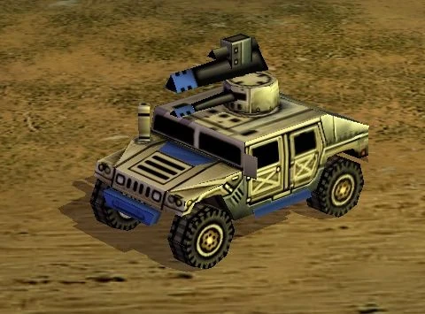
Vehículo rápido y versátil. Puede llevar a 5 soldados para que disparen desde adentro si el humvee es destruido, la infanteria adentro muere
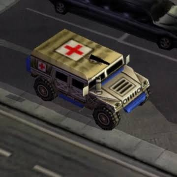
Vehículo de apoyo médico. Puede curar y reparar las unidades cercanas,tambien puede limpiar las toxinas y radiacion que haya en un Aerea puede transportar 3 soldados pero no pueden disparar desde adentro, si la ambulancia es destruida, los soldados que esten dentro saltaran del vehiculo para salvarse
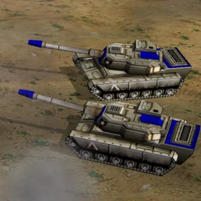
Tanque principal estadounidense de buena resistencia
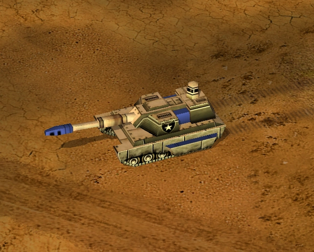
Tanque avanzado. Puede repeler misiles o cohetes que lo ataquen mientras no sean muchos

Unidad de reconocimiento y detección. Puede revelar unidades invisibles debido a su poca resistencia, no es muy util en combate, es invisible mientras no se mueva
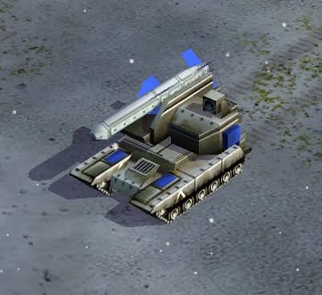
Vehículo de ataque a larga distancia. Dispara un cohete guiado
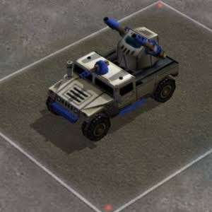
Vehículo de apoyo y defensa aérea. Excelente contra la aviacion, sus laseres pueden atacar a los aviones y a la vez repeler multiples misiles o cohetes que se aproximen a ellos,a las unidades cercanas les aumenta tanto el daño como la velocidad de ataque un poco mas

Vehículo especializado en tecnología electrónica. Puede desmantelar las defensas de una base si esta lo suficiente cerca puede quemar a la infanteria que este a su alrededor tambien
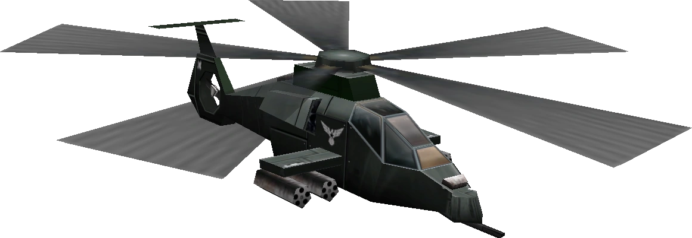
Helicóptero de ataque rapido. Este helicoptero es perfecto para dar soporte aereo, ya que puede acabar tanto como la infanteria como los vehiculos contiene 4 misiles y se recarga solo sin tener que volver a la base
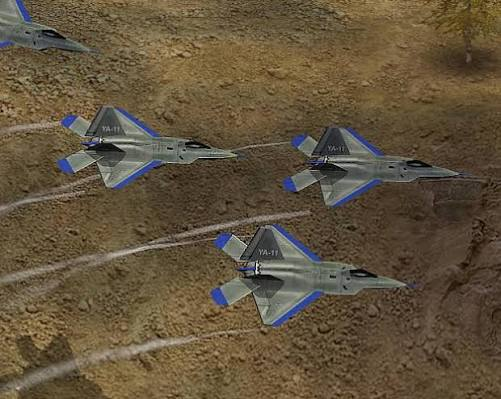
Aeronave de combate.Contiene 4 misiles
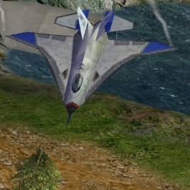
Aeronave especializada en ataques rápidos. Es invulnerable a cualquier ataque, pero despues de tirar su carga se vuelve lenta y muy vulnerable Perfecta para destruir edificios mientras no los pierdas en el proceso
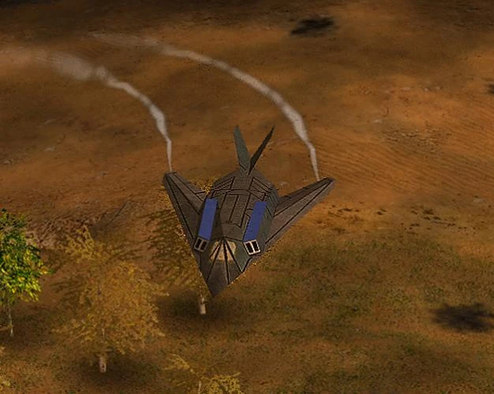
Aeronave de ataque con tecnología de sigilo. es invisible para el enemigo, contiene 2 misiles
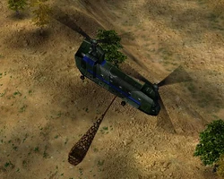
Helicóptero rapido, utilizado principalmente para traer suministros. puede llevar $600 o trasnportar 8 soldados o 2 vehiculos y 2 soldados si hay un edificio civil guarnizado, puede llevar a un grupo de rangers y bajarlos con una cuerda entrando por el techo y tomar el edificio civil
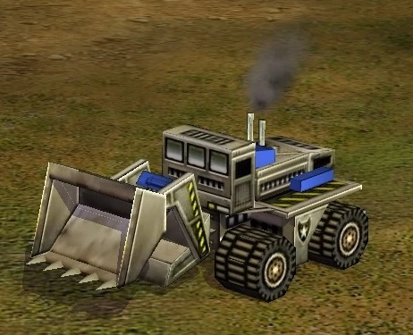
Utilizada para construi los edificios estadounidenses. puede eliminar las minas que haya en un area

Centro principal de operaciones. Aqui se construye las excavadoras desde aqui se puede llamar a un satelite, para que revele un aerea del mapa draunte un tiempo corto
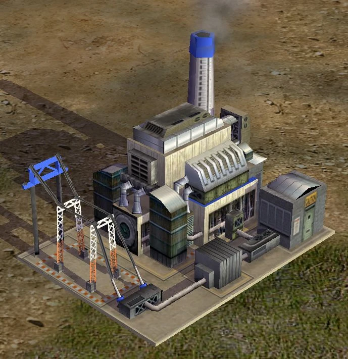
Proporciona energia a la base. puede mejroarse para que produzca un 100% mas de energia

Centro de recursos. Aqui de construyen los chinoks para que traigan los recursos
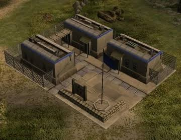
Entrenamiento de infantería. Aqui se consiguen 2 mejoras para los rangers la primera para que puedan capturar edificios enemigos o neutrales la segunda para que tengan granadas cegadoras, potentes contra la infanteria y si hay un edificio civil guarnizado, una sola de estas limpia el edificio

Producción de vehículos. Aqui se consiguen 2 mejoras la primera es para los humvbes, les agrega una ptorreta en el techo para que disparen un misil la segunda es para los sentry drones, les da una ametralladora para que se defiendan
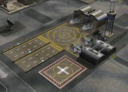
Producción de aeronaves.Aqui se consigue 3 mejoras la primera es para los comanches, las cuales les da 2 cajas de cohetes adicionales, que pueden dispara en un aerea de forma dispersa, pasado un tiempo se recarga solas la segunda es para toda la aviacion, las contramedidas logran que disminuya la probabilidad que les impacte misiles enemigos la tercera es para los aviones de sigilo, las cuales pueden desguarnizar un edificio de los soldados enemigos, dejandolo libre o sacar las unidades que esten dentro de los tuneles del GLA

Centro de planificación estratégica. Este edificio sirve para elegir un plan de batalla, solo hay 3 la primera es el bombardeo el cual saca un cañon del techo para que defienda la base, este plan proporciona a las unidades un 10% de daño en sus ataques el segundo es la busqueda y destruccion, proporciona a las unidades un 20% de rango para que ataquen el tercero es mantener la posicion, proporciona a todas las unidades un 10% de resistencia aqui se obtienen 4 mejoras la primera es para todas las unidades, el entrenamiento avanzado logran que las unidades puedan subir de rango mas rapido la segunda es para la infanteria, los trajes antiquimicos les proporciona una mejor resitencia contra las toxinas y la radiacion la tercera es para los tanques les proporciona una mejor resitencia a los tanques la cuarta es para los drones dandoles una mejor resistencia tambien aqui se puede pedir inteligencia de la CIA para revelar todo el mapa durante un corto tiempo

Superarma estadounidense. con un conteo de 4 minutos, dispara un rayo de particulaes bastante preciso que pueden destruir todo lo que lo atraviese
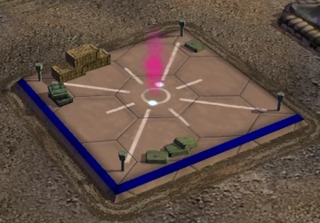
Aqui se dejan paquetes de suministros de la ONU. asi consigue esta faccion dinero infinito
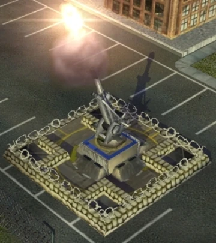
Estructura con un cañon defensivo. Puede ser guarnizada por 4 soldados para defenderla si es destruida las unidades dentro moriran

Sistema defensivo. dispara misiles guiados si hay varios de estas defensas, y una ataca, avisara a las demas para que ataquen
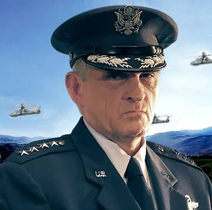
Especializado en aviación y unidades aéreas. Su arsenal incluye variantes especiales de aeronaves estadounidenses.
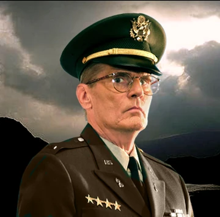
Centrado en tecnología láser y sistemas de energía avanzada.
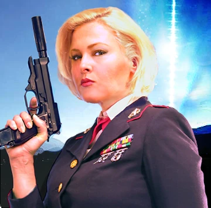
Se especializa en superarmas y estructuras defensivas avanzadas.